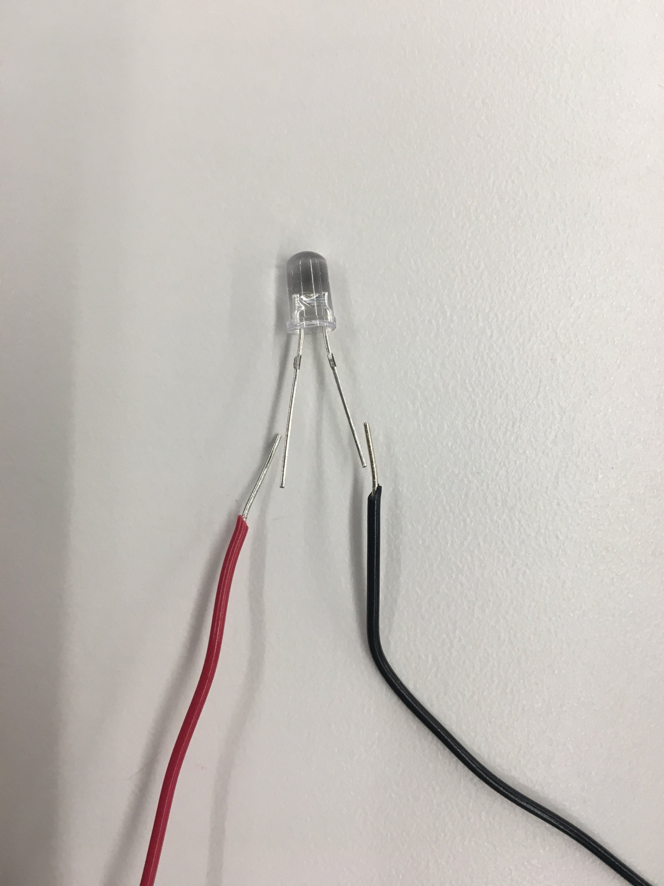
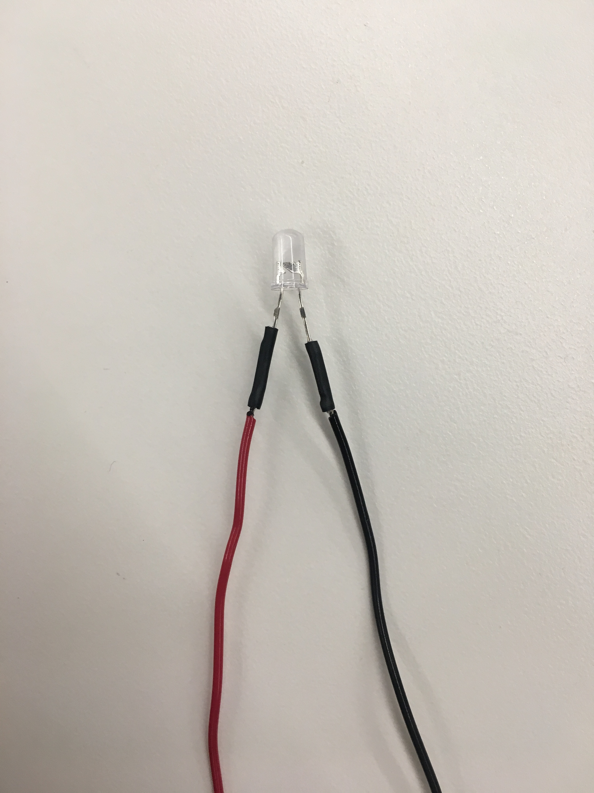

I was inspired by the galaxy night lights, but decided to make it sensitive to light so it responds to darkness.
The box was made using an online box generator. It is a polygon box with fingers to hold together big enough to hold a breadboard inside.
I was hoping to make the switch external to avoid having to open the lid, however this may be difficult since I will have to connect it to the breadboard indirectly. I am also trying to brainstorm
where to leave room for a port that does not affect the aesthetic, but I may just be able to put a battery inside the box to address this issue of powering the arduino.
Circle patterns were cut all around the box save for the bottom to give spaced lighting. In the future I may want to use a transistor so I can add more LEDs for more light.
This was my design on fusion that I then laser cut into cardboard.
This is the fully assembled piece.
I decided to make the phototransistor stick out of the box to avoid it being affected by the internal light produced by the LED.
 The Arduino was programed to react to light via the phototransistor and light an LED located inside of the box as the external area got darker.
The end goal was to make a cute night light.